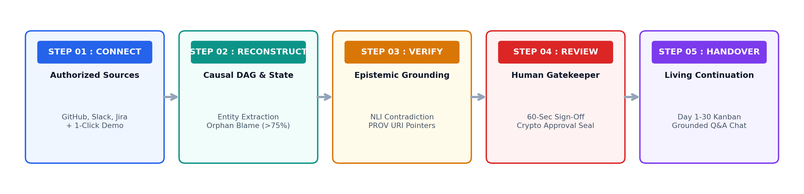
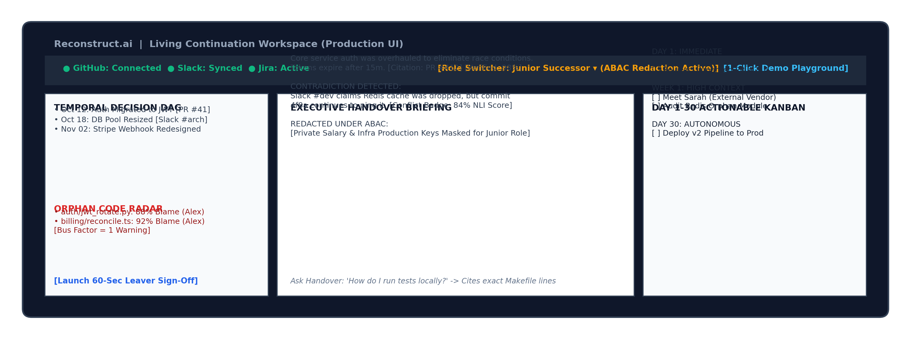

Reconstruct.ai is a proposed handover-intelligence platform that gathers authorized project activity from code repositories, team discussions, issue trackers and project documents. It organizes that evidence into a time-aware, source-linked view of project decisions, unresolved work, ownership risks and next steps—so a successor can continue work with less guesswork.
| Team | Reconstruct.ai |
| Institution | JSPM’s Rajarshi Shahu College of Engineering (RSCOE), Pune |
| Team members | Khushi Patil • Dhruv Patil • Yuvraj Kadam • Nimisha Joshi |
| Repository | github.com/Dhruvplaz-web/reconstruct-ai |
| Submission stage | Round 1 — Plan and proposal |
Project teams accumulate knowledge across many places: source-code commits, pull requests, issue trackers, chat discussions, design notes and individual working practices. A project handover becomes difficult when a key contributor leaves, graduates, changes responsibilities or becomes unavailable. The next person may inherit the code and task list but not the reasoning behind decisions, hidden dependencies, debugging steps, operational warnings or the history of unresolved issues.
The core problem is therefore not simply a lack of documentation. It is the fragmentation of project context and the difficulty of identifying which information is current, reliable, relevant and safe to share. Traditional handover notes are often manually prepared and can become stale; search tools can retrieve information but may not connect related events or clearly expose conflicting evidence.
Reconstruct.ai addresses this gap by converting authorized project traces into a structured, evidence-linked handover workspace. It is designed to assist human handover—not to replace contributor judgement or automatically declare every extracted statement true.
The initial product focuses on software and project-team handovers, with GitHub/Git history and Slack-style exported discussions as the first practical sources. Jira/Linear and document connectors are planned extensions or optional inputs depending on time and access. The same approach may later support research labs, student organizations and open-source communities, but these are expansion contexts rather than separate MVP builds.
| USER GROUP | NEED / PAIN POINT | VALUE FROM RECONSTRUCT.AI |
|---|---|---|
| Departing contributor | Needs a focused way to transfer critical context without writing a long manual handover. | Targeted questions based on detected ownership gaps and unresolved work; human review before sign-off. |
| Incoming successor | Needs to understand current architecture, decisions, risks and next actions. | Source-linked briefing, timeline, unresolved items and Day 1–30 task list. |
| Team lead / project manager | Needs visibility into handover completeness, dependencies and knowledge concentration. | Risk indicators, review status and a structured view of project continuity. |
| Security / repository owner | Needs to control which records and sensitive fields can be accessed. | Permission-aware ingestion and server-side access filtering, subject to policy configuration. |
Reconstruct.ai is a multi-source handover reconstruction system. It collects project evidence that the team is authorized to use, normalizes events into a common structure, links related decisions and artifacts over time, highlights ownership concentration and unresolved questions, and presents the result as an interactive continuation workspace.
The platform is designed around five principles:
The proposed distinction is the combination of repository ownership analysis, cross-source timeline reconstruction, explicit evidence citations, uncertainty/contradiction review and successor-oriented tasks in one workflow. Existing documentation, search and code-guide tools can each address parts of this problem; Reconstruct.ai aims to connect those parts into a handover process. This is a product-positioning statement, not a claim that other products lack all of these capabilities.

1 — Connect: A manager selects the project and departing contributor, authorizes the data sources and chooses either connected sources or a prepared synthetic demo dataset.
2 — Reconstruct: The ingestion service parses commits, pull requests, issue records and permitted discussion exports. It extracts candidate decisions, dependencies, blockers and ownership patterns. Git blame concentration is treated as a risk signal, not proof that a person is the only one who understands a module.
3 — Verify: The system links each candidate statement to its supporting source and timestamp. Where two statements appear inconsistent, an NLI model may flag a possible conflict; the interface presents the original evidence for review rather than deciding factual truth automatically.
4 — Review: The departing contributor or project lead reviews high-risk gaps and answers a small set of targeted questions. Corrections and approvals are recorded with their author and time.
5 — Hand over: The platform applies role-based/attribute-based access rules and generates a continuation workspace with a project summary, evidence timeline, unresolved tasks and suggested first-month actions.
| FEATURE | PLANNED CAPABILITY | USER BENEFIT |
|---|---|---|
| Multi-source ingestion | Import repository history and authorized discussion/ticket exports; provide a synthetic demo path for evaluation. | Reduces manual collection and avoids requiring judges to connect personal accounts. |
| Ownership concentration scan | Analyze Git blame / commit history and flag files with high single-author contribution for review. | Helps teams identify modules that may need knowledge transfer. |
| Temporal evidence graph | Represent people, files, decisions, issues and events with timestamped, traceable relationships. | Shows how project context evolved and where a claim came from. |
| Evidence-linked handover brief | Generate structured summaries with source references and timestamps. | Lets successors inspect the original evidence instead of relying only on generated text. |
| Uncertainty / conflict review | Use NLI as a signal to identify potentially inconsistent statements; route uncertain items to review. | Makes disagreement visible and reduces silent merging of conflicting claims. |
| Targeted leaver questions | Generate a short set of questions from detected gaps, ownership concentration and unresolved items. | Focuses contributor effort on the most important missing context. |
| Continuation workspace | Show a project overview, timeline/graph, citations, unresolved work and Day 1–30 tasks. | Turns handover information into actionable next steps. |
| Permission-aware view | Apply server-side access policies and redact restricted fields before returning data. | Supports safer sharing across roles; requires security testing and policy review. |

| LAYER | PROPOSED TECHNOLOGY | WHY IT FITS / IMPLEMENTATION NOTE |
|---|---|---|
| Frontend | Next.js 14, TypeScript, Tailwind CSS, Radix UI | Responsive dashboard, accessible dialogs/drawers and reusable UI. |
| Backend API | Python, FastAPI, Pydantic, Uvicorn | Python ecosystem supports repository parsing, NLP and graph processing; typed request/response schemas simplify API integration. |
| Ingestion | GitPython; GitHub API/PyGithub; JSON/Markdown parsers | Start with repository cloning/history and local exported files. Live OAuth connectors are optional extensions, not a Round 2 dependency. |
| Graph / storage | NetworkX; SQLite for MVP; PostgreSQL for later deployment | NetworkX is sufficient for a prototype graph. Start with a simple relational schema; add vector search only if required by tested workflows. |
| AI / verification | LLM-based structured extraction; Hugging Face DeBERTa-v3 NLI | LLM output must be schema-validated and citation-grounded. NLI is a possible-conflict classifier, not a truth detector. |
| Security / testing | Server-side ABAC policy checks; PyTest; frontend tests | Enforce least privilege before serialization; test access denial, redaction, secret handling and audit logging. |
The responsibilities below consolidate the four individual contributor dossiers. Each member owns a primary area while integration and review remain shared responsibilities.
| MEMBER / ROLE | PRIMARY RESPONSIBILITIES | ROUND DELIVERABLES |
|---|---|---|
| Khushi Patil Team Lead & Head of Research / Product Strategy |
Problem validation, user taxonomy, research framing, competitor review, sprint planning, acceptance criteria, team coordination and submission compliance. | R1: problem dossier, scope, evaluation plan and role coordination. R2: UAT scenarios, integration coordination and user feedback. R3: final walkthrough, product review and accessibility/security coordination. |
| Dhruv Patil AI Development & Core Engineering Lead |
Structured extraction design, prompt schemas, decision/dependency extraction, grounding and NLI conflict-signalling pipeline, synthetic benchmark design. | R1: AI architecture, prompt/schema plan and benchmark specification. R2: extraction, citation linker and NLI prototype. R3: threshold evaluation, UI integration and hallucination guardrails. |
| Yuvraj Kadam Lead Full-Stack Frontend & UI/UX Engineer |
Next.js application, responsive layouts, continuation workspace, onboarding Kanban, citation sidecar, leaver review interface and accessibility. | R1: wireframes, component plan and design tokens. R2: functional web client, demo interface and API integration. R3: graph visualization, responsive polish and keyboard accessibility. |
| Nimisha Joshi Systems Backend, Data Ingestion & Security Architect |
FastAPI services, repository parsing, Git ownership analysis, multi-source ingestion schemas, provenance records and server-side ABAC/redaction. | R1: schemas, provenance model, ownership logic and policy design. R2: backend, repo ingestion, discussion export parser and demo loader. R3: automated tests, security review and approval-verification enhancement if feasible. |
| ROUND | FOCUS | PLANNED DELIVERABLES | EXIT CHECK |
|---|---|---|---|
| Round 1 — Plan | Validate the problem, define MVP scope and design the architecture. | Consolidated proposal; workflow and architecture; initial data schema; wireframes; synthetic test scenario; team responsibilities. | All required proposal sections reviewed; scope and assumptions approved by team. |
| Round 2 — Build | Deliver a working end-to-end MVP using a controlled dataset. | Repo ingestion; ownership scan; structured extraction; evidence citations; basic timeline/workspace; targeted review questions; demo dataset. | A judge can load demo data and complete one handover flow end-to-end. |
| Round 3 — Finish | Improve reliability, usability, privacy and explainability. | Conflict/uncertainty indicators; role-aware access controls; tests; responsive/accessibility improvements; walkthrough video and limitation notes. | Demonstration is repeatable; core flows and access rules pass documented tests. |
The project’s impact will be evaluated through a small pilot rather than presented as a guaranteed percentage improvement. The team will compare a baseline handover process with a Reconstruct.ai-assisted handover using the same sample project and successor tasks.
| METRIC | HOW TO MEASURE | SUCCESS SIGNAL |
|---|---|---|
| Time to first meaningful task | Measure elapsed time for a new contributor to identify and begin a predefined task using the baseline and the generated handover. | Lower time with no loss in task correctness. |
| Handover completeness | Use a checklist of required decisions, dependencies, open issues, ownership and operational notes; count items supported by evidence. | More checklist items are discoverable and source-linked. |
| Ownership-risk coverage | Compare manually identified critical files with files flagged by the ownership scan; inspect false positives and false negatives. | Useful risk flags with explainable ownership evidence. |
| Evidence traceability | Audit a sample of generated claims and verify that each opens the correct source record and timestamp. | Claims are reviewable and unsupported claims are clearly marked. |
| Review effort | Record time spent by the departing contributor reviewing and answering system-generated questions. | Less effort than preparing a full manual handover, without overstating a fixed time target. |
| Privacy / access control | Run role-based test cases for allowed and denied records; inspect logs and API responses for restricted fields. | No unauthorized disclosure in the defined test suite. |
Expected impact: reduce avoidable context-search effort, make critical project knowledge easier to locate, surface ownership and continuity risks earlier, and provide successors with an actionable, evidence-linked starting point. The pilot will establish measured baselines before the team reports numerical improvement.
| NAME | ROLE | INSTITUTION | |
|---|---|---|---|
| Khushi Patil | Team Lead & Head of Research / Product Strategy | JSPM RSCOE, Pune | khushi@reconstruct.ai |
| Dhruv Patil | AI Development & Core Engineering Lead | JSPM RSCOE, Pune | dhruvpatil4555@gmail.com |
| Yuvraj Kadam | Lead Full-Stack Frontend & UI/UX Engineer | JSPM RSCOE, Pune | yuvraj@reconstruct.ai |
| Nimisha Joshi | Systems Backend, Data Ingestion & Security Architect | JSPM RSCOE, Pune | nimisha@reconstruct.ai |
Project repository: https://github.com/Dhruvplaz-web/reconstruct-ai
To keep the proposal technically defensible, the following constraints apply to the design and evaluation: